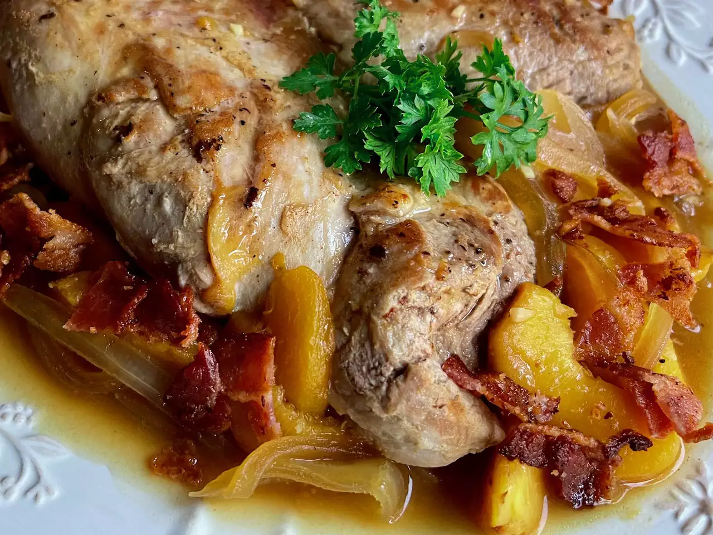

Pork Tenderloin

What is it?
Delicious pork and peaches with onions, orange juice, and a great array of flavors. Great with rice and a green vegetable.
Ingredients
- 3 slices bacon
- 1 (2 pound) package pork tenderloin
- 1/2 teaspoon salt
- 1/4 teaspoon fresh ground black pepper
- 3/4 teaspoon ground ginger, divded
- 1 1/2 cups vertically sliced onion
- 1 1/2 teaspoons minced garlic
- 2 cups peeled and sliced fresh peaches
- 1 cup low-sodium chicken broth
- 2 tablespoons frozen orange juice concentrate
- 1 teaspoon fish sauce
- 2 tablespoons water
- 2 tablespoons corn starch
- fresh parsley for garnish (optional)
Directions
- Place bacon in a large skillet and cook over medium-high heat, turning occasionally, until evenly browned and crisp, about 10 minutes. Drain bacon slices on paper towels. Reserve drippings in the skillet.
- Dry pork tenderloin with paper towels and season both sides with salt, pepper, and 1/4 teaspoon ground ginger.
- Increase heat to medium-high and brown tenderloin in the bacon drippings on all sides, 5 to 7 minutes. Removed browned tenderloin from skillet, transfer to a plate, and keep warm.
- Reduce heat to medium. Add onion slices to the same skillet and stir until onions are soft and beginning to take on some color, 3 to 5 minutes. Stir in garlic and cook until fragrant, about 1 minute.
- Add sliced peaches, chicken broth, orange juice concentrate, and remaining ground ginger. Bring to a boil and return tenderloin to the skillet. Pile peaches on top of the meat, cover, reduce heat to simmer, and cook until pork is slightly pink in the center, 20 to 25 minutes. An instant-read thermometer inserted into the center should read at least 145 degrees F (63 degrees C).
- Arrange pork and peaches on a serving platter.
- Meanwhile, combine fish sauce, water, and cornstarch in a small bowl and stir until there are no lumps. Increase heat to medium and bring skillet contents back to a boil. Add cornstarch mixture to the liquid in the skillet and stir quickly until sauce is bubbly and thickened, about 5 minutes.
- Pour sauce over pork and peaches. Crumble up cooked bacon and sprinkle over the peaches. Garnish with parsley, if desired, and serve warm.